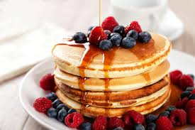

Pancakes
- Pancakes
- Tiramisu
- Strawberry Shortcake

Ingrediënten
- 100g bloem
- 2 eieren
- 300ml melk
- 1 lepel olie
Bereiding
- Doe 100 g bloem, 2 grote eieren, 300 ml melk, 1 eetlepel zonnebloem- of plantaardige olie en een snufje zout in een kom of grote kan en klop tot een glad beslag. Deze moet qua consistentie vergelijkbaar zijn met een enkele crème.
- Laat het 30 minuten rusten als je tijd hebt, of begin meteen met koken.
- Zet een middelgrote koekenpan of crêpepan op middelhoog vuur en veeg deze voorzichtig af met wat geolied keukenpapier.
- Bak de pannenkoeken, als ze warm zijn, gedurende 1 minuut aan elke kant tot ze goudbruin zijn, gebruik ongeveer een halve pollepel beslag per pannenkoek. Houd ze warm in een lage oven terwijl je de rest maakt.
- Serveer met partjes citroen en basterdsuiker, of je favoriete vulling. Eenmaal koud, kunt u de pannenkoeken tussen bakpapier leggen, vervolgens in huishoudfolie wikkelen en maximaal twee maanden invriezen.